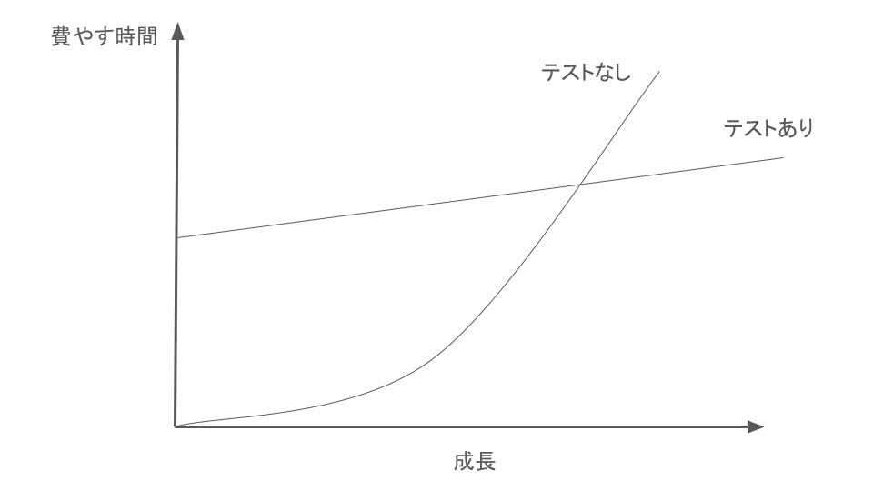

このCodelabでは、「単体テストの考え方/使い方」を参考に、Androidアプリ開発での単体テストの基礎を学びます。 特に、Jetpack Compose を活用したサンプルコードを通じて、テスト実装の具体的な方法を解説します。
このCodelabの目的は、Jetpack Composeを活用したテストの実装方法を学ぶことです。基本的なテストの考え方を学ぶだけでなく、実際の開発にすぐに応用できるテクニックも紹介します。
ソフトウェア開発において、単体テストの第一の目的はコード設計を直接改善することではなく、プロジェクトを持続可能なものにすることです。この「持続可能性」が重要な理由は、ソフトウェアは新しい機能や変更が加わるごとに自然と複雑さが増していき、保守性が低下しやすくなるためです。この複雑化（エントロピー）の進行を防ぐために、単体テストはコードの変更が意図しない影響を与えていないかを確認する「セーフティネット」としての役割を果たします。
ソフトウェアエントロピーは、機能追加や改良を行うたびにコードが複雑化し、保守が難しくなる現象を指します。単体テストはエントロピーを抑え、コードを安定した状態に保つ役割を果たします。単体テストの準備には初期の労力が必要ですが、その労力は、後々のデバッグや修正の回数を減らすことで、開発効率や保守性の向上に寄与します。

単体テストは、コードの品質を保ちながら開発を進める上で重要ですが、テストの価値を発揮するためには単体テストの価値と保守コストの両方を考慮しなければなりません。 そしてこのコストは下記に挙げるさまざまな作業で費やされる時間が積み重なることで増加していきます。
これらの要点を押さえて、テストスイートを設計することで、持続可能でプロジェクト全体に貢献する価値あるテストを設計することができます。 作成した単体テストへの保守コストがあまりにもかかりすぎると、その単体テストの価値がなくなってしまう、もしくはマイナスになってしまうことがあります。
コードカバレッジ（テスト実行中に実行されるコード行の割合）は、テストスイートの品質を測る指標として使用されることが多いですが、カバレッジだけではテストの質は保証できません。カバレッジに過度にこだわると、カバレッジを上げるためだけに表面的なテストや冗長なテストを書く傾向が生まれることがあります。良質なテストは、カバレッジの高さに依存せず、特に失敗の影響が大きいビジネスロジック部分に焦点を当てるべきです。
優れたテストスイートには以下の特徴があります：
このように設計された単体テストによって、コードベースの複雑化を抑えながら、プロジェクト全体が安心して成長できる基盤を築くことができます。
次のステップでは、単体テストの書き方や考え方の違いを深掘りし、古典学派とロンドン学派という2つの主要なアプローチについて学びます。
単体テストには、古典学派とロンドン学派という2つの主要な考え方があります。この違いは、特に「テストをどこまで隔離するか」という点に基づいており、それぞれが異なるアプローチでテストの信頼性や独立性を確保しています。
一般に単体テストは以下のように定義されます：
この「隔離」に対する考え方の違いが、古典学派とロンドン学派を分けています。以下で、それぞれのアプローチを見ていきましょう。
古典学派では、実際のインスタンスをテストケース内で生成し、プロダクションコードの実際の挙動をテストします。依存関係も基本的に実際のものを使用するため、コードそのものの動作を確認しやすいという特徴があります。以下に古典学派の例を示します：
@Test
fun `test person instance creation`() {
// インスタンスを作成
val person = Person("Taro", 25)
// プロパティの値をテスト
assertEquals("Taro", person.name, "名前が正しくありません")
assertEquals(25, person.age, "年齢が正しくありません")
}
この方法では、依存関係が増えるとテストが複雑になることもありますが、コードの設計に依存が少なくなるような工夫を促す効果もあります。
ロンドン学派は、テスト対象の依存関係をモック化して独立したテストを実行する「モック中心のアプローチ」とも呼ばれるアプローチです。テスト内でモックを生成し、必要な動作のみを模倣させることで、テストケースごとにデータや状態が完全に独立したものになります。以下にロンドン学派の例を示します：
@Test
fun `test person instance creation`() {
// モックを作成
val person = mock<Person>()
whenever(person.name).thenReturn("Taro")
whenever(person.age).thenReturn(25)
// プロパティの値をテスト
assertEquals("Taro", person.name, "名前が正しくありません")
assertEquals(25, person.age, "年齢が正しくありません")
}
ロンドン学派は、テスト対象のクラス（「1つのクラス」）を単体と見なし、他の依存を全てモック化することによって独立性を保ちます。このため、依存が多いコードに適していますが、モック化の量が増えるとテストのメンテナンスが複雑になる可能性があります。
ロンドン学派の長所は魅力的なように思えるが、単体テストにおいて、テスト対象の焦点をクラスに当てることは間違いです。 焦点を当てるべきは１単位のコードではなく、１単位の振る舞いです。
隔離対象 | 単体の意味 | |
ロンドン学派 | モック化された依存関係 | 1つのクラス |
古典学派 | テスト・ケース | １つのクラス、もしくは、同じ目的を達成するためのクラスの１グループ |
この場合、ロンドン学派では、検証内容が詳細になりすぎてしまうことがあります。単体テストが内部構造と深く結びついてしまうことで、保守性の低いテストコードになってしまうからです。（詳細についてはstep4で説明します。）
次のステップでは、単体テストの基本的な構造と、広く使用されるAAAパターン（Arrange-Act-Assert）について学びます。
この章では、単体テストを書く際の基本構造である AAAパターン と適切なテスト命名規則について学びます。これにより、一貫性があり、わかりやすいテストコードを作成できるようになります。
単体テストでは、AAAパターン (Arrange, Act, Assert) を使用してテストを構成します。以下に各フェーズの詳細を説明します。
テスト対象システム (System Under Test, SUT) とその依存関係を設定し、テストの前提条件を満たす状態を作ります。
テスト対象のメソッドや振る舞いを実行します。
実行結果が期待通りであることを検証します。
以下は、AAAパターンを適用した単純なテストケースの例です。
fun testAddition() {
// Arrange
val calculator = Calculator()
val a = 5
val b = 3
// Act
val result = calculator.add(a, b)
// Assert
assertEquals(8, result)
}
単体テストのメソッド名は、非開発者にもわかりやすい名前を付けることが重要です。
この章では、AAAパターンを使用して一貫性のある単体テストを書く方法を学びました。また、適切なテスト命名規則を守ることで、誰にでもわかりやすいテストを作成できるようになります。これらの知識を活用して、品質の高いテストコードを書いていきましょう。
良い単体テストを構成する4つの柱について説明します。これらを理解し、バランスを取ることで、テストコードの品質を高め、プロジェクトの持続可能な成長を促進できます。
退行とは、既存の機能にバグを持ち込むことです。良いテストは退行を早期に検知し、修正を可能にします。
リファクタリングによってテストが壊れる場合、特にコードが正しい挙動をしているのにテストが失敗することを偽陽性と呼びます。これを防ぐことがリファクタリング耐性の鍵です。
例
fun testHtmlGeneration() {
// Arrange
val generator = HtmlGenerator()
val data = SampleData()
// Act
val html = generator.generateHtml(data)
// Assert
assertTrue(html.contains("ExpectedMessage"))
}
テストは、変更の影響をすばやくフィードバックする仕組みであるべきです。
テストコードは簡潔で読みやすく、保守が容易であるべきです。
4本の柱をすべて最大限満たすことは困難です。以下のようにトレードオフが発生する可能性があります。
良い単体テストは、以下の4本の柱をバランスよく満たすことを目指します。
ただし、これらをすべて同時に最大限追求するのは困難なため、プロジェクトの性質や優先度に応じて、最適なバランスを追求することが重要です。テストはブラックボックステストを基本としつつ、必要に応じてホワイトボックステストを補完的に用いることで、安定したコードベースを実現しましょう。
テストダブルは、テスト対象コードが依存している外部コンポーネントを模倣するためのオブジェクトです。以下のような種類があります。
モックは「コマンド (副作用を伴うメソッド)」、スタブは「クエリ (値を返すメソッド)」として利用する。
スタブの動作をテストすることはアンチパターンです。スタブは最終的な結果を示すものではなく、テスト過程の一部に過ぎません。 テストは「最終的な結果」に焦点を当て、非開発者にも意味のある内容にする必要があります。
スタブの振る舞いを検証するテストは避けるべきです。
@Test
fun `should remove inventory even if store does not have enough inventory (incorrect behavior)`() {
val storeMock = mockk<IStore>(relaxed = true)
every { storeMock.hasEnoughInventory(Product.Shampoo, 5) } returns false
every { storeMock.removeInventory(Product.Shampoo, 5) } returns Unit
val customer = Customer(storeMock)
val result = customer.purchase(Product.Shampoo, 5)
assertFalse(result)
// 不適切: スタブの振る舞いを検証している
verify { storeMock.removeInventory(Product.Shampoo, 5) }
}
外部へのコマンドを検証するモックを用いるテストは正しい。
@Test
fun `should not remove inventory if store does not have enough inventory`() {
val storeMock = mockk<IStore>(relaxed = true)
every { storeMock.hasEnoughInventory(Product.Shampoo, 5) } returns false
val customer = Customer(storeMock)
val result = customer.purchase(Product.Shampoo, 5)
assertFalse(result)
// 適切: removeInventoryが呼び出されていないことを検証
verify(exactly = 0) { storeMock.removeInventory(Product.Shampoo, 5) }
}
副作用を伴うメソッド。 例: オブジェクトの値を変更するメソッド。
副作用を伴わず値を返すメソッド。 例: 引数を足し算して結果を返すメソッド。
モックはコマンド、スタブはクエリを模倣する役割を持つ。
ドメイン層とアプリケーション層を分離することで、良いテストが書けるようになる。
単体テストには以下の3つの手法があります。それぞれの特性を理解し、テスト対象や状況に応じて適切に使い分けることが重要です。
概要
入力値を渡して得られる戻り値を検証します。この手法は最も簡潔で保守しやすいテストケースを作成できます。
特徴
サンプルコード
import org.junit.jupiter.api.Assertions.assertEquals
import org.junit.jupiter.api.Test
class CalculatorOutputTest {
private val calculator = Calculator()
@Test
fun `add should return sum of two numbers`() {
val result = calculator.add(2, 3)
assertEquals(5, result)
}
}
処理の実行後にテスト対象オブジェクトの状態を検証します。
サンプルコード
import org.junit.jupiter.api.Assertions.assertEquals
import org.junit.jupiter.api.Test
class CalculatorStateTest {
private val calculator = Calculator()
@Test
fun `increment should increase value by 1`() {
calculator.increment()
assertEquals(1, calculator.value)
}
@Test
fun `reset should set value to 0`() {
calculator.increment()
calculator.reset()
assertEquals(0, calculator.value)
}
}
テスト対象と協力オブジェクトとの間のコミュニケーションをモックを使って検証します。
サンプルコード
class CalculatorCommunicationTest {
@Test
fun `add should log the addition operation`() {
// モックのLoggerを作成
val logger: Logger = mock()
// モックを注入してCalculatorWithLoggerのインスタンスを作成
val calculator = CalculatorWithLogger(logger)
// メソッド呼び出し
calculator.add(2, 3)
// log メソッドが正しい引数で呼ばれたことを確認
verify(logger).log("Adding 2 and 3: result is 5")
}
}
手法 | リファクタリングへの耐性 | 保守のしやすさ | テストコードの簡潔さ |
出力値ベーステスト | 高い | 高い | 高い |
状態ベーステスト | 中程度 | 中程度 | 中程度 |
コミュニケーションベーステスト | 普通 | 低い | 低い |
出力値ベーステストは以下の理由で最も優れた手法です。
状態ベーステストでは以下の課題があります。
ヘルパーメソッドの例
private fun assertAccountState(account: BankAccount, expectedBalance: Int, expectedIsActive: Boolean) {
assertEquals(expectedBalance, account.balance, "Balance should be $expectedBalance")
assertEquals(expectedIsActive, account.isActive, "Account active state should be $expectedIsActive")
}
出力値ベーステストを基本とし、必要に応じて他の手法を補完的に使用するのが理想的です。
Jetpack Composeでの単体テストを効果的に実施するためには、以下の知識と技術が重要です。
単体テストは、コードの品質向上とプロジェクトの持続可能性に寄与します。良いテストは、コードの変更によるリスクを軽減し、開発の効率と安心感を高めます。
すべてのテスト手法を一律に適用するのではなく、プロジェクトの特性やコードベースに合わせて適切に選択することが重要です。特に、出力値ベーステストを基盤としながら、状況に応じて状態ベースやコミュニケーションベースのテストを補完的に使用することで、テストの価値を最大化できます。
Jetpack Composeを活用した単体テストを通じて、品質の高いコードベースとスムーズな開発プロセスを構築しましょう。